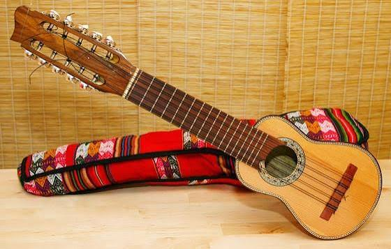
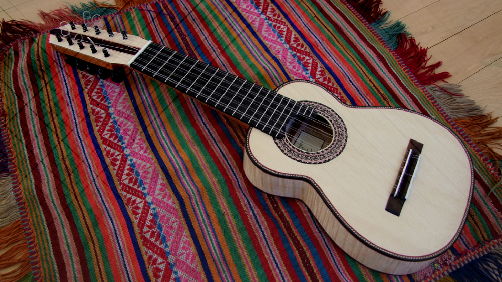
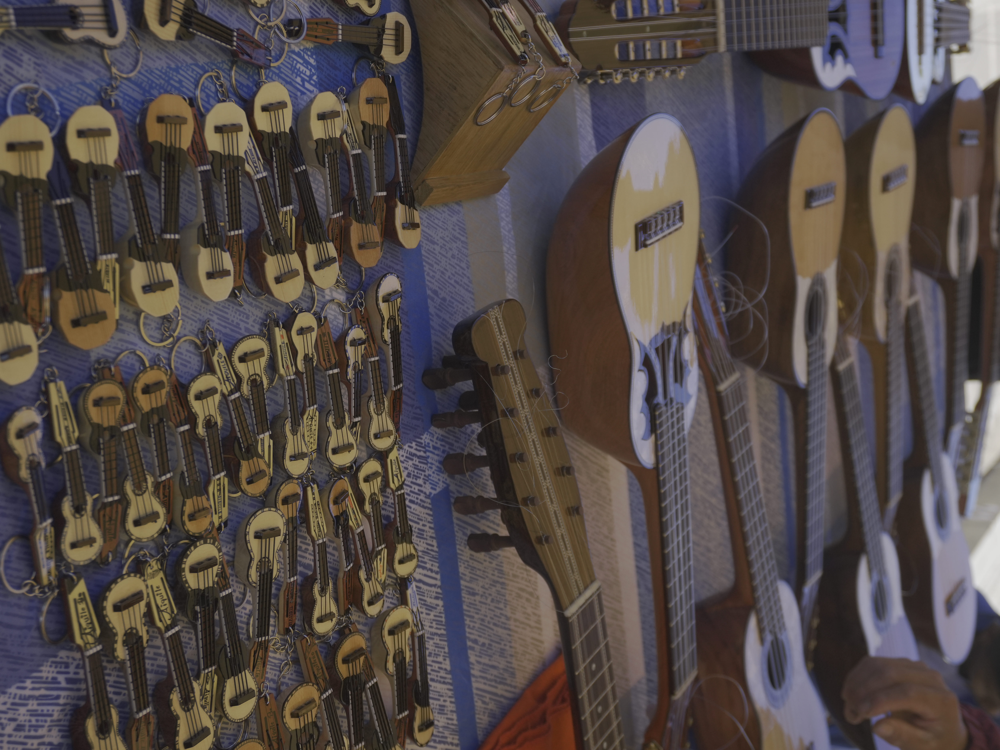
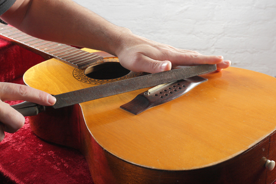
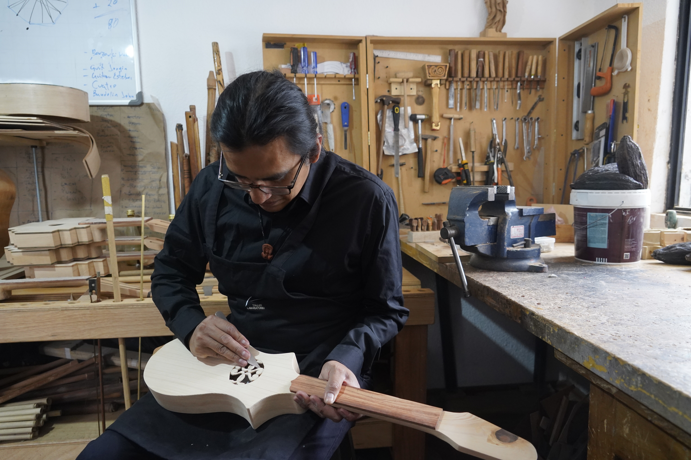
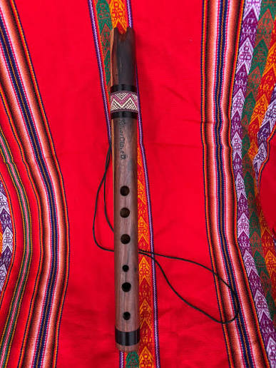
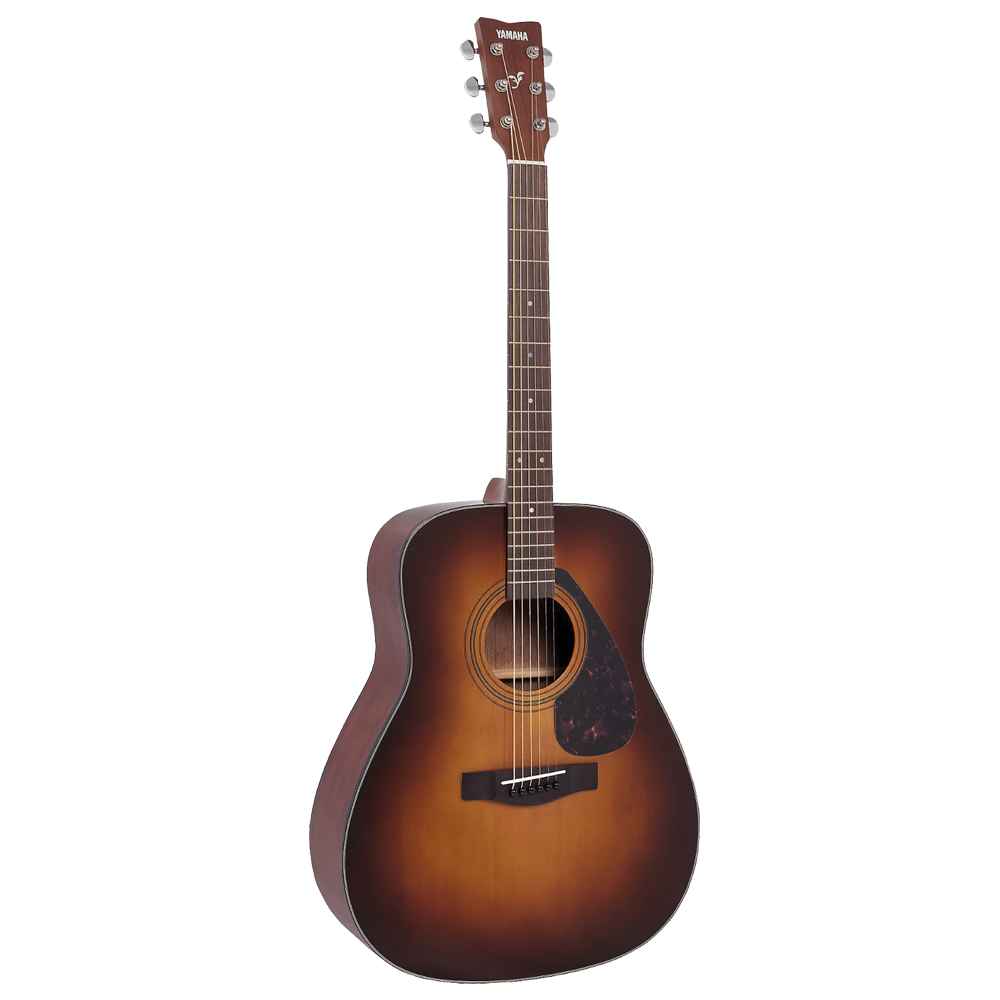

Andino
Charango de diez cuerdas
Caja de resonancia en madera laminada, ideal para principiantes.
S/ 380.00En Taki encuentras charangos, quenas, zampoñas y bombos construidos por artesanos, junto a guitarras y teclados para quienes están dando sus primeros acordes.
Ver catálogo

Una tienda pensada para músicos de la sierra central del Perú, entre lo tradicional y lo contemporáneo.

Taki nació como un pequeño taller de reparación de instrumentos de cuerda en Huancavelica. Hoy combinamos instrumentos andinos hechos a mano con marcas reconocidas de guitarras y teclados.

Cada instrumento andino que vendemos proviene de talleres familiares de la región, apoyando a artesanos locales y difundiendo la música tradicional entre nuevas generaciones.

Una muestra rápida de nuestro catálogo; revisa todos los detalles y precios en la sección Catálogo.

Caja de resonancia en madera laminada, ideal para principiantes.
S/ 380.00
Afinación estándar en Sol, seis orificios frontales y uno posterior.
S/ 65.00
Cuerdas de acero, cuerpo dreadnought, perfecta para iniciarse.
S/ 450.00